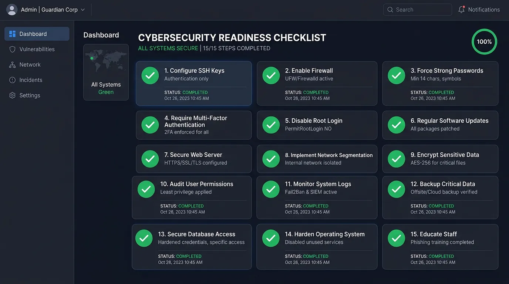

Bạn vừa thuê một VPS mới, cài đặt hoàn tất hệ điều hành Ubuntu hoặc CentOS và bảng điều khiển (như aaPanel). Bạn nghĩ rằng trang web của mình đã an toàn trên Internet? Đáng tiếc là không! Sự thật phũ phàng là: Chỉ trong vòng 5 phút sau khi VPS của bạn online, các con bot tự động từ khắp nơi trên thế giới đã bắt đầu rà quét và thử bẻ khóa mật khẩu (Brute-force) máy chủ của bạn hàng ngàn lần.
Việc sử dụng VPS mang lại tốc độ và quyền kiểm soát tuyệt đối, nhưng đổi lại, bạn phải tự chịu trách nhiệm về an ninh mạng. Bài viết này của TeamDevDesign sẽ cung cấp một checklist 15 bước bảo mật VPS Linux sống còn từ cơ bản đến nâng cao. Hãy thực hiện bảo mật vps linux ngay lập tức để biến máy chủ của bạn thành một "pháo đài bất khả xâm phạm" chuẩn 2026.
Bảo mật VPS Linux là quá trình thiết lập các rào chắn kỹ thuật (tường lửa, mã hóa, phân quyền) nhằm bảo vệ máy chủ ảo chạy hệ điều hành Linux khỏi các cuộc tấn công mạng, đánh cắp dữ liệu, hoặc bị lợi dụng làm mạng máy tính ma (Botnet/đào tiền ảo). Không giống như Windows Server (nơi bạn thường dùng giao diện Remote Desktop và Antivirus), Linux chủ yếu được quản lý qua giao diện dòng lệnh (SSH), đòi hỏi các kỹ thuật bảo vệ đặc thù như sử dụng SSH Key hay Fail2Ban.
Dưới đây là 15 bước bắt buộc phải làm ngay sau khi khởi tạo server.
Lỗ hổng bảo mật (Zero-day) thường xuyên được phát hiện trên hệ điều hành. Việc đầu tiên khi nhận VPS là cài đặt các bản vá bảo mật mới nhất.
sudo apt update && sudo apt upgrade -yNhiều người có thói quen sử dụng luôn mật khẩu mặc định do nhà cung cấp (như VinaHost, Vietnix, DigitalOcean) gửi qua email. Đây là điều tối kỵ! Hãy đổi mật khẩu `root` ngay lập tức thành một chuỗi phức tạp (bao gồm chữ hoa, chữ thường, số và ký tự đặc biệt).
passwd rootTài khoản root là mục tiêu tấn công hàng đầu vì nó có quyền tối cao và ai cũng biết tên tài khoản này. Bạn cần tạo một user khác (vd: admin_dev) và cấp quyền Sudo cho nó.
adduser admin_dev
usermod -aG sudo admin_devTừ giờ, hãy đăng nhập bằng admin_dev. Khi cần chạy lệnh hệ thống, bạn thêm sudo ở đầu lệnh.

Mật khẩu dù dài đến đâu cũng có nguy cơ bị lộ hoặc bẻ khóa. Xác thực bằng SSH Key (Cặp khóa mã hóa Public/Private) là phương pháp bảo mật tuyệt đối. Nếu không có file Private Key nằm trên máy tính của bạn, hacker không thể đăng nhập dù biết tên tài khoản.
Bot tự động thường chỉ quét vào port 22 mặc định của SSH. Việc đổi port sẽ giúp giảm ngay 90% lượng tấn công rác.
Chỉnh sửa file cấu hình SSH (sudo nano /etc/ssh/sshd_config), tìm dòng #Port 22, bỏ dấu # và đổi 22 thành một số ngẫu nhiên (VD: 2289). Đừng quên mở port này trên tường lửa trước khi khởi động lại dịch vụ SSH (sudo systemctl restart sshd).
Sau khi đã test đăng nhập thành công bằng User mới và SSH Key, hãy chặn hoàn toàn quyền đăng nhập của root bằng cách sửa file sshd_config: đổi PermitRootLogin yes thành PermitRootLogin no, và PasswordAuthentication yes thành no.
UFW giúp bạn đóng mọi cánh cửa vào VPS, chỉ mở những cánh cửa cần thiết.
sudo apt install ufw
sudo ufw default deny incoming
sudo ufw default allow outgoing
sudo ufw allow 2289/tcp # (Port SSH mới của bạn)
sudo ufw allow 80/tcp # (Web HTTP)
sudo ufw allow 443/tcp # (Web HTTPS)
sudo ufw enableFail2Ban là công cụ tự động theo dõi file log. Nếu ai đó nhập sai mật khẩu quá số lần quy định (vd: 5 lần), Fail2Ban sẽ tự động "ban" (chặn) IP đó ở cấp độ tường lửa trong một khoảng thời gian (vd: 1 tiếng hoặc vĩnh viễn).
Cài đặt đơn giản: sudo apt install fail2ban và cấu hình trong file jail.local.
Nếu VPS chạy website, bạn tuyệt đối không nên phơi bày IP máy chủ ra public. Hãy sử dụng Cloudflare (chế độ Đám mây vàng). Kẻ tấn công DDoS sẽ chỉ đánh vào hạ tầng của Cloudflare, VPS của bạn vẫn an toàn ẩn mình đằng sau.
Nếu bạn đang sử dụng aaPanel hoặc các web server, hãy làm thêm các bước sau:
Như đã đề cập ở bài trước, đổi port mặc định (7800/8888) sang port ngẫu nhiên và cấu hình Security Entrance (đường dẫn bí mật).
Từ aaPanel cho tới các tài khoản WordPress Admin, hãy cài đặt plugin 2FA (dùng app Google Authenticator). Đây là lớp khiên vững chắc nhất chống lộ mật khẩu.
Sử dụng Nginx free WAF (tích hợp trong aaPanel) hoặc Cloudflare WAF để chặn các mã độc SQL Injection, XSS, hoặc chặn hoàn toàn truy cập từ các quốc gia rủi ro (Nga, Trung Quốc...) nếu web của bạn chỉ phục vụ người Việt Nam.
Càng ít phần mềm chạy, rủi ro càng thấp. Tắt FTP nếu bạn không xài (chỉ dùng SFTP qua port SSH). Đừng cài Mail Server nếu bạn chỉ dùng Gmail/SMTP ngoài.
Để VPS tự động tải và cài đặt các bản vá bảo mật hạt nhân (Kernel) vào ban đêm mà không cần bạn can thiệp.
Kiểm tra file /var/log/auth.log để xem có ai đang cố gắng đăng nhập vào hệ thống hay không. Hoặc dùng các công cụ giám sát trực quan như Netdata.
Bảo mật tốt đến đâu thì thảm họa vẫn có thể xảy ra (hỏng phần cứng SSD tại Datacenter). Hãy cài đặt script Backup cơ sở dữ liệu và mã nguồn hàng ngày lên một nơi lưu trữ khác (như Google Drive, S3, hoặc máy tính cá nhân). Có bản sao lưu, bạn có thể dựng lại mọi thứ trong 10 phút.
Nếu bạn cũng đang quản trị một máy chủ Windows Server, các chiến lược bảo mật sẽ có sự khác biệt rõ rệt so với môi trường Linux. Cụ thể:
root trên Linux, bạn cần đổi tên hoặc tạo tài khoản khác để thay thế quyền Administrator mặc định trên Windows.Nếu quên port SSH, bạn không thể kết nối bằng PuTTY. Bạn cần truy cập vào bảng điều khiển (Console/VNC) do nhà cung cấp VPS cấp trên trình duyệt để kiểm tra lại file cấu hình sshd_config.
Có khả năng nếu bạn gõ sai mật khẩu quá số lần quy định. Để tránh điều này, hãy khai báo IP mạng nhà bạn vào danh sách ignoreip trong cấu hình Fail2Ban.
Chưa. Checklist này tập trung vào bảo vệ quyền truy cập và lỗ hổng phần mềm. Để chống DDoS, bạn cần kết hợp thêm dịch vụ tường lửa mạng như Cloudflare Proxy ở phía trước VPS.
Việc bảo mật VPS Linux không phải là việc làm một lần rồi thôi, mà là một quy trình bảo trì liên tục. Tuy nhiên, nếu bạn hoàn thành tốt 16 bước trong checklist về bảo mật vps linux ở trên, máy chủ của bạn đã vượt qua 99% các cuộc tấn công quét lỗ hổng rác trên không gian mạng hiện nay.
Khi VPS đã an toàn, chúng ta sẽ bắt tay vào việc tinh chỉnh hiệu suất. Mời bạn đọc tiếp bài viết Cách Tối ưu VPS cho WordPress tải cực nhanh dưới 1 giây của TeamDevDesign để biến cỗ máy của bạn trở nên vô đối về sức mạnh!